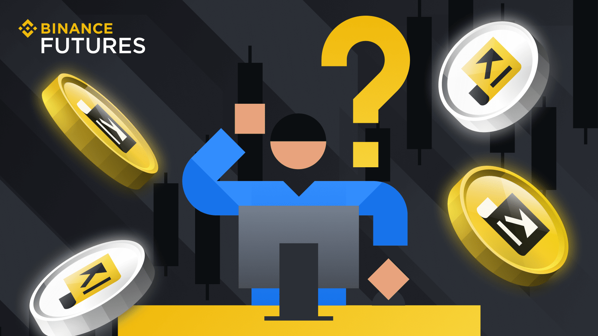

Binance
Покупайте и продавайте криптовалюту за считаные минуты.
Покупайте и продавайте криптовалюту за считаные минуты.
Начните знакомство с Binance. Изучите наши материалы о том, как начать работу с криптовалютной биржей и как правильно торговать криптоактивами.